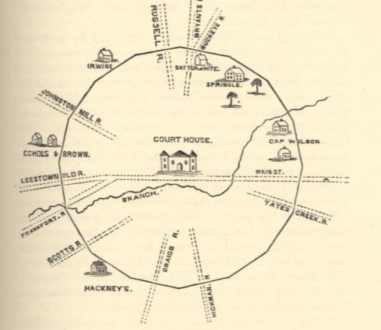
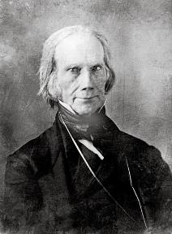
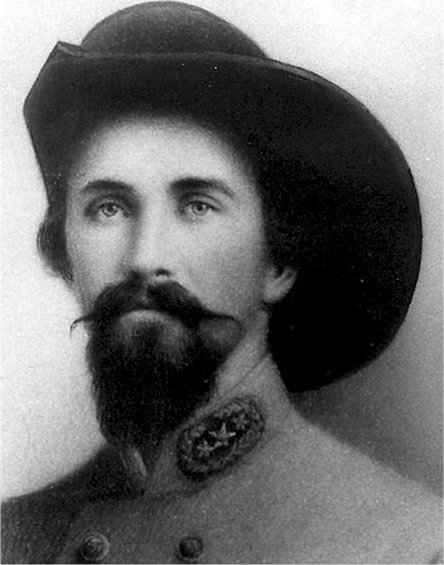

|
Lexington thrived in the years before the Civil War, located at the center of a network
of roads that ran from the lush Bluegrass countryside to the Ohio and Mississippi Rivers.
Financial, commercial and manufacturing success came early to the town, and schools,
banks, factories and stores sprang up to meet the needs of a mobile population willing to
gamble on the growth of a new city. Home to the well regarded Transylvania University and
a multitude of schools for both boys and girls, Lexington was a cultural mecca
unparalleled by other cities on the early nineteenth century frontier.
Lexington was Kentucky's first city. It boasted the first newspaper and the first
performance of a Beethoven symphony west of the Alleghenies, the nation's second mental
hospital, and a racetrack as elegant as those found in Europe. The brisk trade through the
small city reminded visitors of Market Street in Philadelphia. Central Kentucky farmers
and their slaves traded with merchants bound for New Orleans: hemp bagging and ropes,
|

An early plan for the layout of Lexington
|
saltpeter, gun powder, linsey and linen cloth, wool blankets, whiskey and much more.
"Fancy Houses" provided entertainment for men, and goods coming in from New York,
Philadelphia and New Orleans met the growing demand for luxury items, music and books. As
with other Southern cities, much of Lexington's prosperity relied on both immigrant and
African-American labor. The Kentucky slave trade flourished with the support and
protection of Lexington's patrollers, slave traders, and jails.
By 1810, the sales of some merchants had surpassed $1 million annually. Along with the
lawyers, merchants and bankers came the commercial networks that tied Lexington's elite to
a national ruling class. Horace Holley, the Yale-educated president of Transylvania
University from 1818 to 1827, spoke of Lexington as the "Athens of the West"—an homage to
its cultural, economic, and political aspirations. Transylvania University had one of the
finest medical libraries in the United States and one of the very few law departments.
World-renowned musicians and portrait-painters came to live in Lexington. Many
Lexingtonians attended the open lectures held by such famous intellectuals as Charles
Caldwell of Philadelphia, a noted physician. The city's surrounding farms supported a
bustling market in agricultural produce and slaves, but with the flood of cheaper British
manufactured goods after the War of 1812 and with the advent of the steamboat, the
river-based commercial centers of Louisville and Cincinnati eventually outstripped
Lexington as a center of manufacturing.
Nevertheless, Lexington was a hub of trans-continental migration and Lexingtonians were
sure of their role in the new nation. An antebellum traveler, Fortesque Cuming, described
Lexington's main street, running south-east from Frankfort toward Boonesboro: "about
eighty feet wide, compactly built, well paved" and lined by brick walkways. The city's
leading citizens, including Congressman Henry Clay, wisely invested in stagecoach
companies, toll-collecting turnpikes and railroads. The Lexington-Maysville turnpike,
chartered in 1818, was an important route for stagecoaches carrying mail from Washington
|

Henry Clay, the best-known Lexingtonian of the antebellum
era
|
and the East to Lexington, where it was then distributed south and west. The largest
carrier pigeon loft in the country was in the top of the stage barn on Limestone Street.
By 1820, the city's fame had grown to the point that two presidents and the wildly popular
French General Marquis de Lafayette had visited the town.
The 1830s served as a major watershed for the city. In 1831, the city was formally
incorporated. Its first mayor, Charlton Hunt, followed in the footsteps of Henry Clay and
emphasized internal improvements. Lexington was the first city in Kentucky to have
streetlights, paved sewers, and sidewalks. The city hosted an education convention that
laid the groundwork for the state's public school system, and within a few years, its
tax-paying women gained the right to vote in elections related to school-related issues.
In 1833, the city was hit with a cholera epidemic which again stunted any opportunity to
compete with Cincinnati and Louisville as a center of business and industry. In that same
year, a bipartisan effort to curtail the slave trade led the Kentucky legislature to pass
a Slave Non-Importation Law. As a consequence, Lexington's internal infrastructure for the
buying and selling of slaves grew to be even more important. Meanwhile, the Kentucky
Colonization Society managed to send nearly 100 freed persons to Liberia to start a new
life. One of the new settlers, Alfred Russell of Lexington, ultimately become president of
that first African republic.
Though Lexington was a center of the colonization movement in the 1830s, the 1840s saw
a noticeable hardening in attitudes toward slavery. Anti-slavery sentiment became nearly
heretical in the city, and even moderate emancipationists such as Cassius M. Clay—a
distant cousin of Henry Clay—were seen as dangerous insurgents. In 1845, a group of angry
Lexingtonians took apart the printing press for Clay's newspaper The True American
and—in deference to the right to property—politely shipped it across the Ohio River to the
free state of Ohio. Lexington's military regiments turned out in force for the Mexican
War, despite the warnings of Henry Clay that this war would lead to nothing more than
greater strife over slavery. After the war, the minds of Kentucky's politicians became
clearer on the role of its black population—the 1849 constitutional convention led to a
|

John Hunt Morgan, who thoroughly embraced the romance
and flair for drama associated with service in the cavalry
|
more rigid pro-slavery stance, and Lexington's few free blacks lost the few rights they
had. The 1850s strengthened the city's resolve to maintain its slave populations in check,
while at the same time many brave black Lexingtonians helped runaway slaves on their
journey North.
In 1860, Lexington resident and Democrat John C. Breckinridge ran for president on a
states rights platform. When Abraham Lincoln—whose wife Mary Todd was a distant cousin of
Breckinridge's—won the election, many Kentuckians sent their sons to fight in the imminent
civil war. Some went north, others south, and Lexington became a parade ground for both
sides as her citizens wept to see their sons, supplies and horses march out of the
city—many never to return.
In September of 1861, Lexington was occupied by the Union Army; the city's citizens
lived that way through the rest of the Civil War. Through the middle of 1864, it was a
consistent target of raids and other forms of harassment by Confederate cavalry,
particularly those under the command of Brig. Gen. John Hunt Morgan. The city also
attracted thousands of refugees from across Tennessee, including a great many African
Americans fleeing slavery. This led to the establishment of a military recruitment depot
called Camp Nelson; ultimately, Lexington sent eight African-American regiments to the
Union Army.
Because the city remained in Union hands throughout the Civil War, with the primary
combat in the area being cavalry raids, Lexington emerged from the conflict relatively
unscathed. It quickly rebounded after the Civil War, though it was dwarfed in economic and
cultural importance by other Southern cities—particularly Atlanta, Louisville, Memphis,
and St. Louis—in the postbellum years.
Source: Christopher Bates for the History 139A website.
|